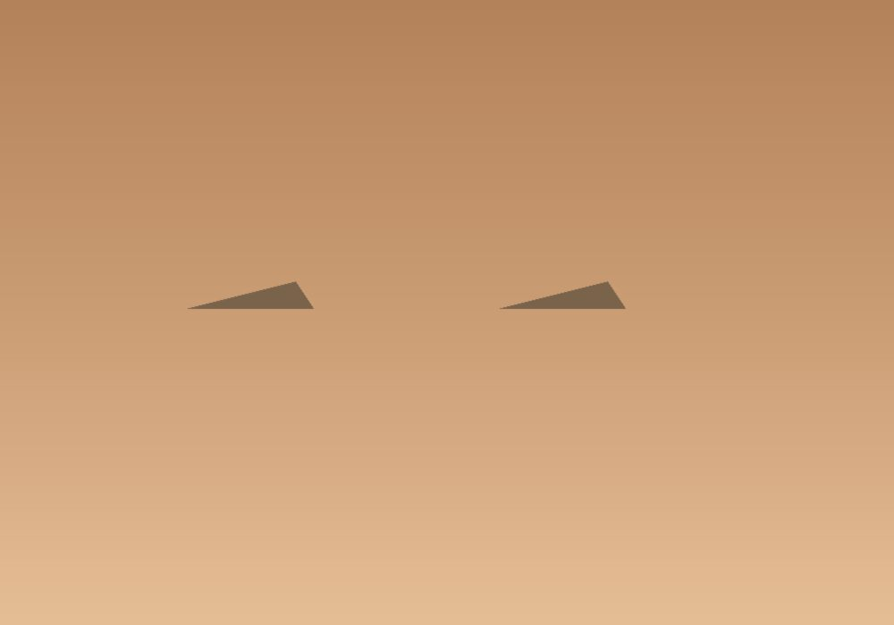
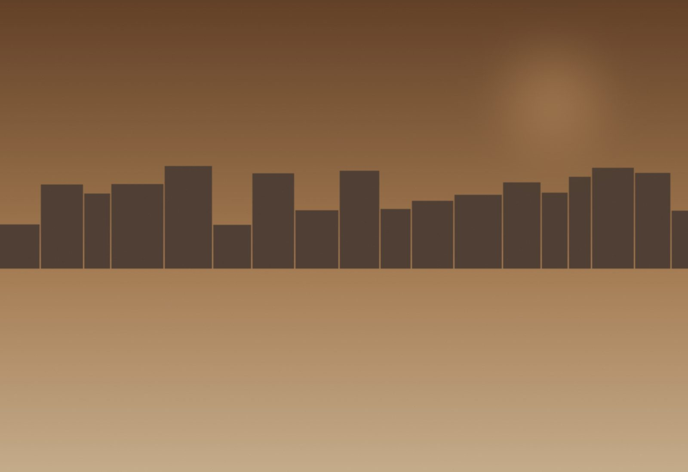
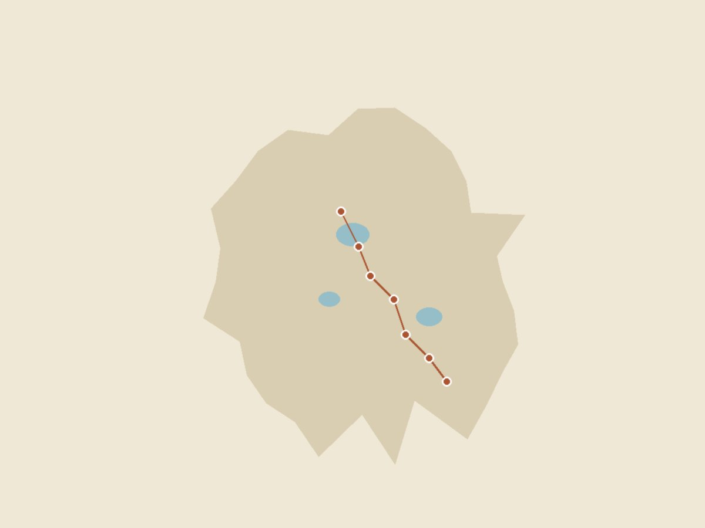
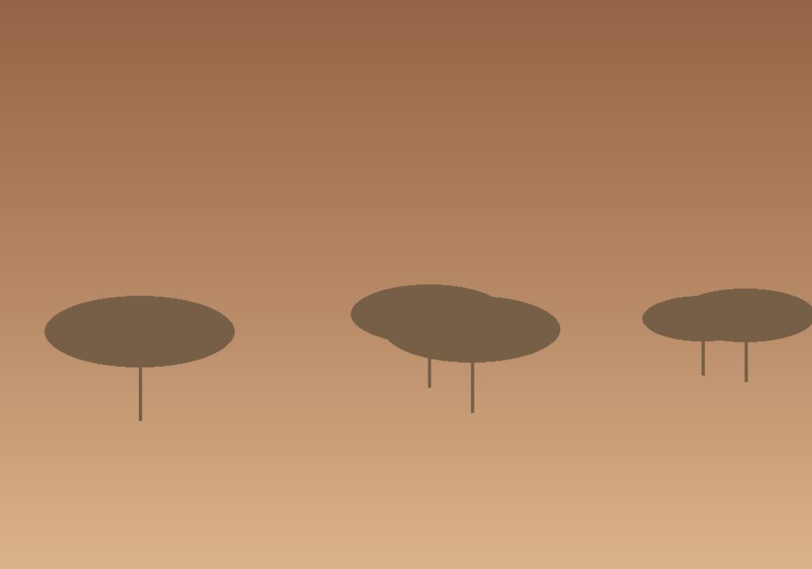
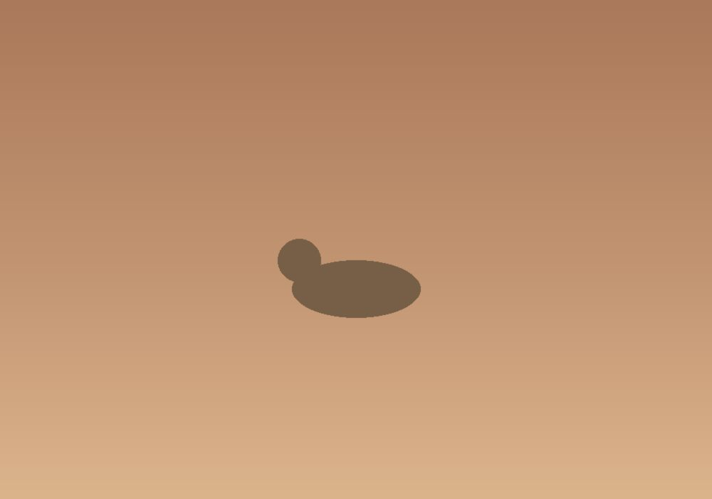
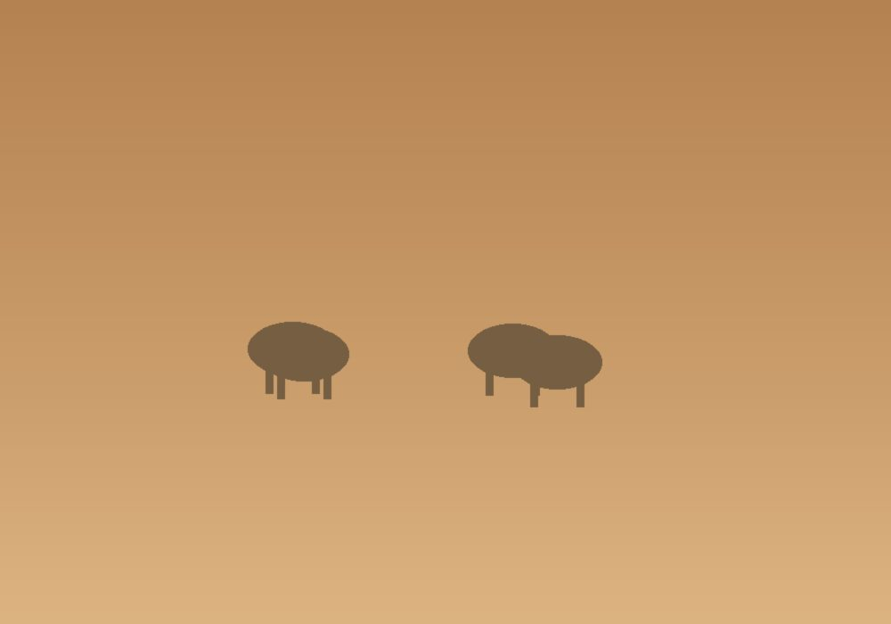
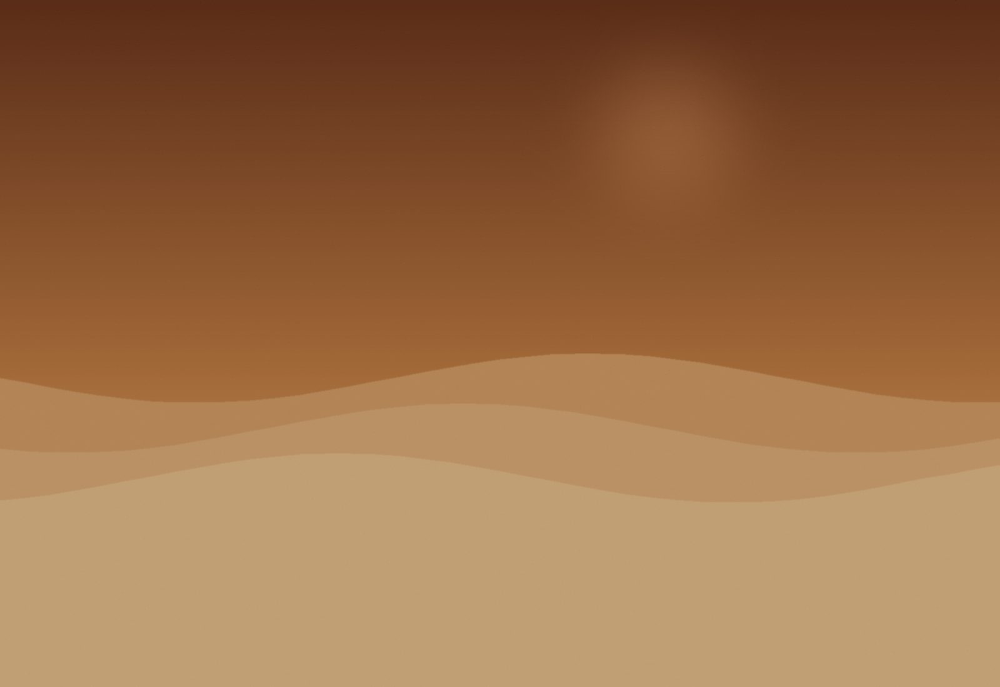

Días 1 · 2 · 3
Lisboa
Bienvenida en aeropuerto. Tres noches en el Bairro Alto. Tour privado por los barrios históricos, cena de fado en una casa centenaria y mañana en Belém.


Comenzamos en Lisboa, donde el azulejo y el fado conviven con la cocina más interesante del Atlántico. Cruzamos el Alentejo hasta Sevilla — capital andaluza, sus bodegas de jerez en sanlúcar, sus plazas y patios. Subimos a Granada (acceso reservado a la Alhambra al amanecer), bajamos a Córdoba, después Madrid en sus mejores tabernas y Barcelona para cerrar.
Comemos en doce mesas seleccionadas — algunas con estrella, algunas sin pretensión. Dormimos en cuatro paradores históricos y dos hoteles boutique. Caminamos cada día.

Acceso a los Palacios Nazaríes una hora antes de la apertura al público.
Cata vertical de cinco bodegas en el triángulo del jerez.
Almuerzos privados en cuatro mesas centenarias en Madrid y Barcelona.

Catorce días en avance lento del Atlántico al Mediterráneo, pasando por todas las cocinas y todos los climas ibéricos.
Empezar por el día 1Bienvenida en aeropuerto. Tres noches en el Bairro Alto. Tour privado por los barrios históricos, cena de fado en una casa centenaria y mañana en Belém.

Visita al Templo Romano, cena en una herdade alentejana y traslado a Sevilla. Una tarde por el Real Alcázar.

Acceso privado a los Palacios Nazaríes al amanecer, sin nadie más. Tarde en el Albaicín y cena de tapas en una bodega del siglo XVIII.

Vuelo a Madrid. Tres noches en el Ritz. Mañana en el Prado con curador, mercado de San Miguel y excursión a Toledo.

Tren rápido a Bilbao y al día siguiente a Barcelona. Tour Gaudí privado, cena en el Born y mañana libre antes del vuelo internacional.
Sumá días al final del viaje, con salidas privadas.

Cuatro noches entre Oporto y las quintas del valle del Duero.

Cinco noches en una finca interior, perfecto para descansar tras el viaje.

Tres noches del lado africano del estrecho.
| Salida | Disponibilidad | Precio desde | |
|---|---|---|---|
| 12 abril 2026 | Abierta | $16,800 | Reservar → |
| 10 mayo 2026 | Pocas plazas | $17,400 | Reservar → |
| 14 junio 2026 | Abierta | $18,200 | Reservar → |
| 13 septiembre 2026 | Lista de espera | $18,200 | Reservar → |
| 11 octubre 2026 | Abierta | $16,800 | Reservar → |
Precios por persona en habitación doble. Suplemento de habitación individual a consultar.